Library
Approved application · approved logoEvery image below is an actual canonical PNG. Open an image for its full resolution. These are authored design scenes, not current-app browser captures.
Reflections · nested
folder-nestedActions and implementation pointers
+ New page · Journal · Explore · All pages · ⌄ · Reflections · › · Reading · Ask Journl · Today’s Journal · Close · Instant · Thinking
apps/web/src/app/(app)/@appSidebar/_components/app-sidebar-pages.tsxapps/web/src/app/(app)/folders/_components/folder-nested-pages-list.tsxapps/web/src/app/(app)/pages/_components/page-editor.tsx

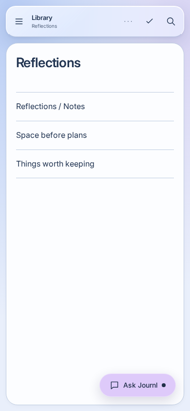
SHA256 39ce5f8700fbf8972235ef46f57798a23f882066d28cb63f7db6c7f5c081db4b

SHA256 5d6f8e2e72428b2bd4f020a19947fe4d400f127cbc2a9c1a4a8fccda664300a0

SHA256 a659230dac43d366bbd4ffbcfac77476fe968390a139aa4289ee6cdb6dbe8661

SHA256 b3d00441ef86bbbc5563679dfb04de6cecb7705fff571e9af582c38f2ec528b8
Reflections · empty
folder-emptyActions and implementation pointers
+ New page · Journal · Explore · All pages · ⌄ · Reflections · › · Reading · New folder · New page · Ask Journl · Today’s Journal · Close · Instant · Thinking
apps/web/src/app/(app)/@appSidebar/_components/app-sidebar-pages.tsxapps/web/src/app/(app)/folders/_components/folder-nested-pages-list.tsxapps/web/src/app/(app)/pages/_components/page-editor.tsx

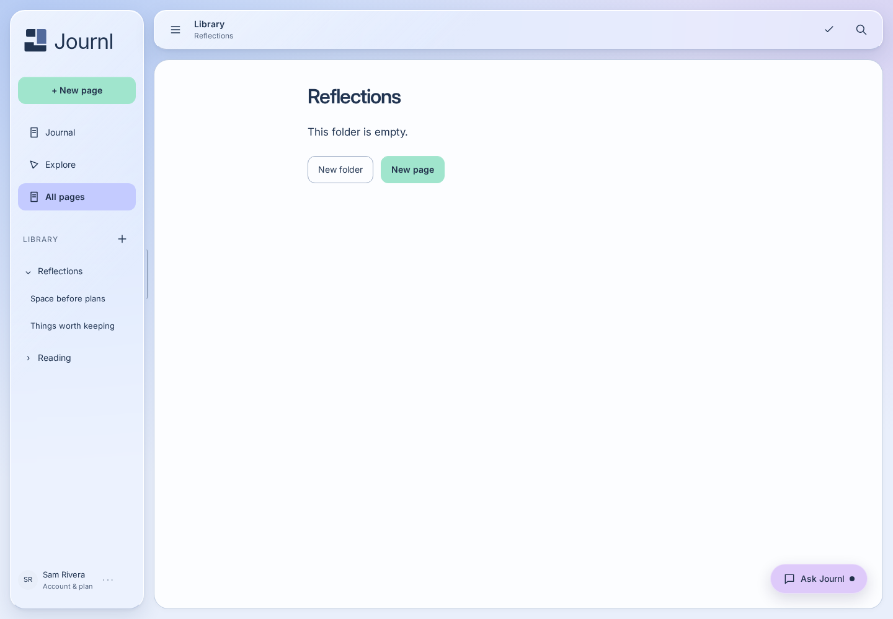
SHA256 c19e36ac1aa25e8d2a39613517481240544239c0c7faef3f8b5dbed65af03ca5

SHA256 c906c8821b4750cd7dd6e6c0dc797de23323b47c504b8ff44ced125855560128

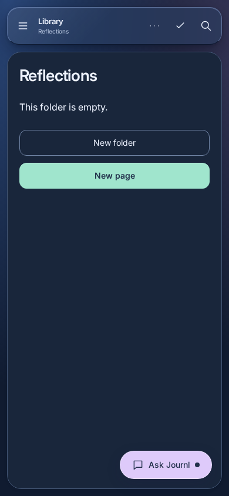
SHA256 107a764a5fbaf4efe82182f11578bdf41709b3cd1d10155e4cc6950790ebaf3d

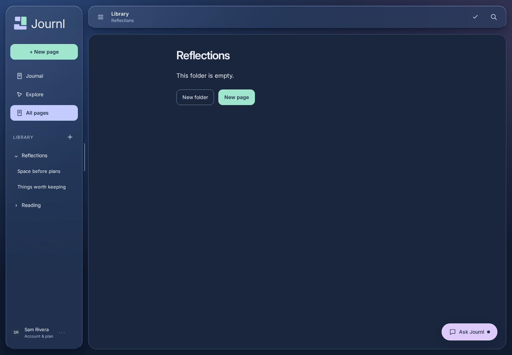
SHA256 3b3a44b40789cc7321567c8f8298cb2c194ae98997ef10c5573964018b1deaea
Reflections · loading
folder-loadingActions and implementation pointers
+ New page · Journal · Explore · All pages · ⌄ · Reflections · › · Reading · Ask Journl · Today’s Journal · Close · Instant · Thinking
apps/web/src/app/(app)/@appSidebar/_components/app-sidebar-pages.tsxapps/web/src/app/(app)/folders/_components/folder-nested-pages-list.tsxapps/web/src/app/(app)/pages/_components/page-editor.tsx

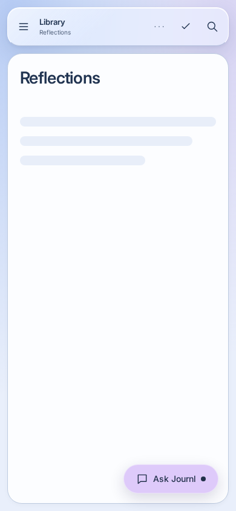
SHA256 01a3053d26ce0d8af55c7fcde1140cdba7241d0730517146e21aecc532a0c2fb

SHA256 a0a8e081d80c58851a08e1790f9c06d9af2a4d63f9a0dbca0cec569799caba74

SHA256 9f4921e599f1f45e041e338e8d04b9111228ae7eccb1e60e002ba8499a567ac3

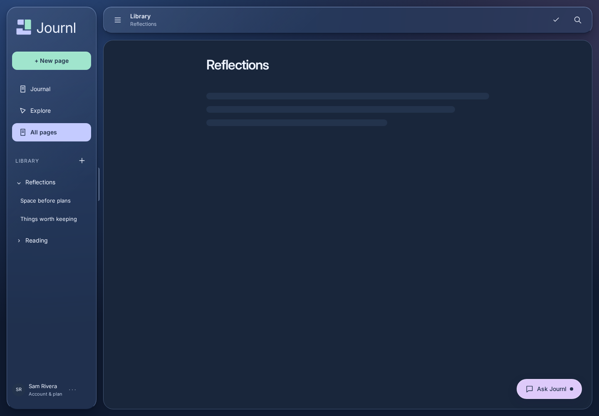
SHA256 680b094071e7e5d7c8e830a9b99a645e8ed0d2d2836a29c48def92fcf95a6de5
Reflections · error
folder-errorActions and implementation pointers
+ New page · Journal · Explore · All pages · ⌄ · Reflections · › · Reading · Retry · Ask Journl · Today’s Journal · Close · Instant · Thinking
apps/web/src/app/(app)/@appSidebar/_components/app-sidebar-pages.tsxapps/web/src/app/(app)/folders/_components/folder-nested-pages-list.tsxapps/web/src/app/(app)/pages/_components/page-editor.tsx

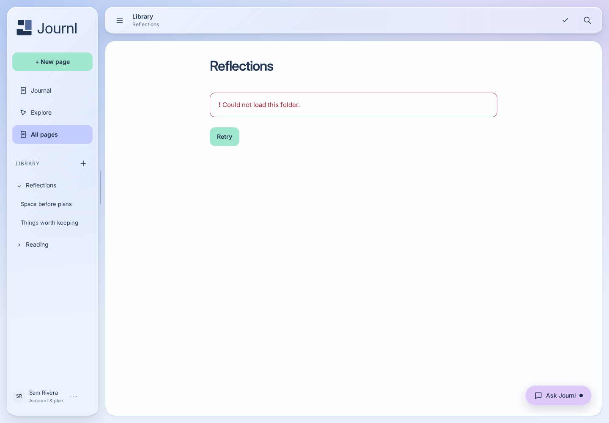
SHA256 d10d47d743747c0541fa4b491da4b0f76f99608c341c49cf73bc72f36f517648

SHA256 8319cc549b285d676998f16c3d4eb7d4230b2603f27308950c97733a04ac13f6

SHA256 33d143842a85de5140cb6f6e9574deb0f6534ae418d2d82d1fcf53337a649e2f

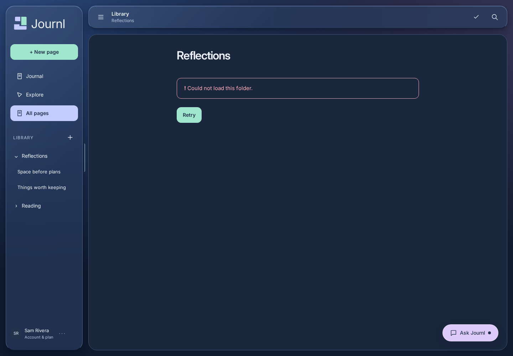
SHA256 c9e5d1390c75ddee6918cd6151f5d7f753c33e5ccc9cb4c817697fca4f0e54c2
Reflections · page-loading
folder-page-loadingActions and implementation pointers
+ New page · Journal · Explore · All pages · ⌄ · Reflections · › · Reading · Ask Journl · Today’s Journal · Close · Instant · Thinking
apps/web/src/app/(app)/@appSidebar/_components/app-sidebar-pages.tsxapps/web/src/app/(app)/folders/_components/folder-nested-pages-list.tsxapps/web/src/app/(app)/pages/_components/page-editor.tsx

SHA256 a3744eb9a8db24b6ff0cb5de8c6e636f7614db01cdf56435d4067b9846d3d955

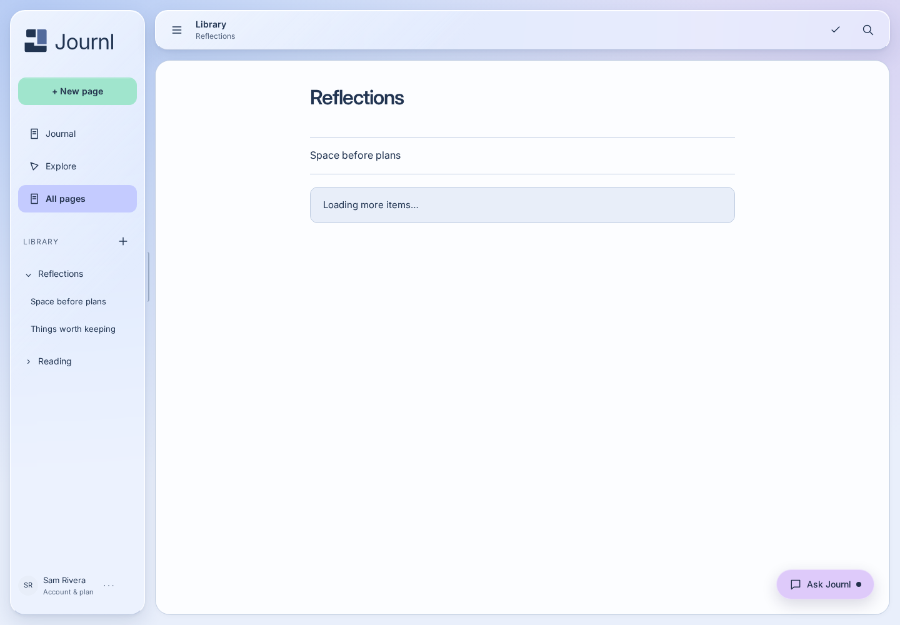
SHA256 dd98cb0ba4d5459c45155de0acf3ff7def80d26aa7cabc660c12a3b06d194110

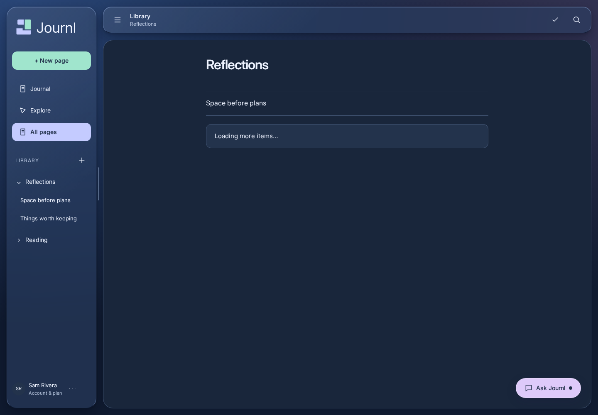
SHA256 0fcbf97b0d5fd79c23bfaa0b459223d3b770f41ecfd9b05b0f16f88d94227c92

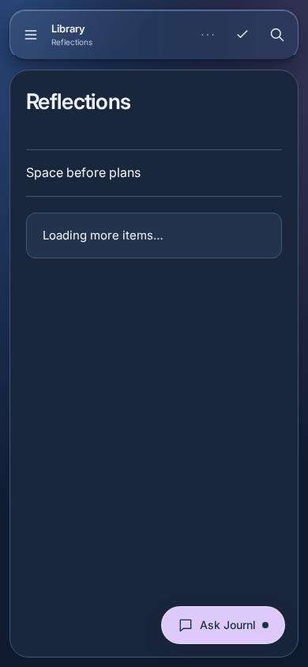
SHA256 2e1f587dfbf7ead23d21814085dc508206a65613f46e915a9d3d8a5666c8a2fa
Reflections · page-error
folder-page-errorActions and implementation pointers
+ New page · Journal · Explore · All pages · ⌄ · Reflections · › · Reading · Retry · Ask Journl · Today’s Journal · Close · Instant · Thinking
apps/web/src/app/(app)/@appSidebar/_components/app-sidebar-pages.tsxapps/web/src/app/(app)/folders/_components/folder-nested-pages-list.tsxapps/web/src/app/(app)/pages/_components/page-editor.tsx

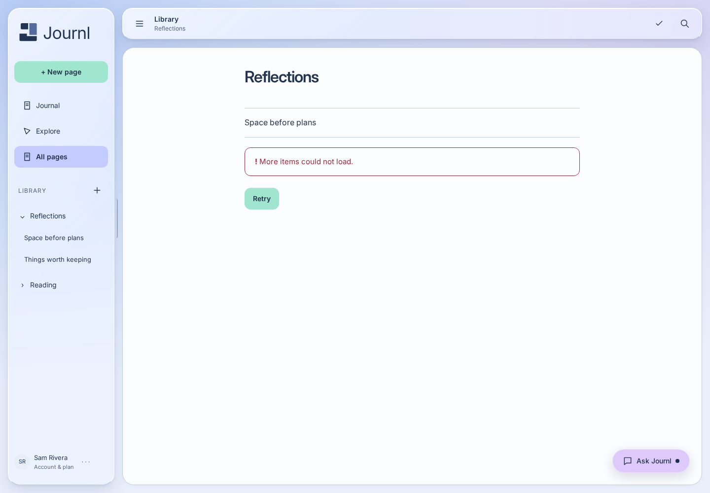
SHA256 af873b5d6935e7560757ca290b4ad564faaa7a4046ff8f636cb74bb40ed50fa0

SHA256 41585c17532b0b7b5eb4c493f2207431771a6f83124297f4f512ac7fe313e539

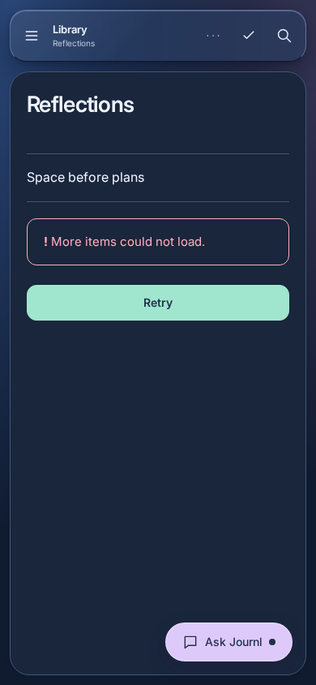
SHA256 395d4d92f1b8dc48b859e691a15095aa6cde324b1a38ffa081d377ab41c6b9fb

SHA256 405dfa8cd2e0a1c5b24b23337246709bb57b8bfbc2504982ab44864232966afb
Rename folder · ready
folder-rename-readyActions and implementation pointers
+ New page · Journal · Explore · All pages · ⌄ · Reflections · › · Reading · Folders · Cancel · Save name · Space before plans · Things worth keeping · On paying attention · Ask Journl · Today’s Journal · Close · Instant · Thinking
apps/web/src/app/(app)/@appSidebar/_components/app-sidebar-pages.tsxapps/web/src/app/(app)/folders/_components/folder-nested-pages-list.tsxapps/web/src/app/(app)/pages/_components/page-editor.tsx

SHA256 4a27c0cbf39e7493ae88a1862bd14351caf4a045fb3bfa5d8e37fbddc20b76a4

SHA256 06d383d295cab2a3bb23e6627c0c93be58da56faf0635a44567a1e68015b70e4

SHA256 58fa4ea43913d6721448364bbc6c9de2f1a5dbcbbbb078c7ca4a061dd67979a1

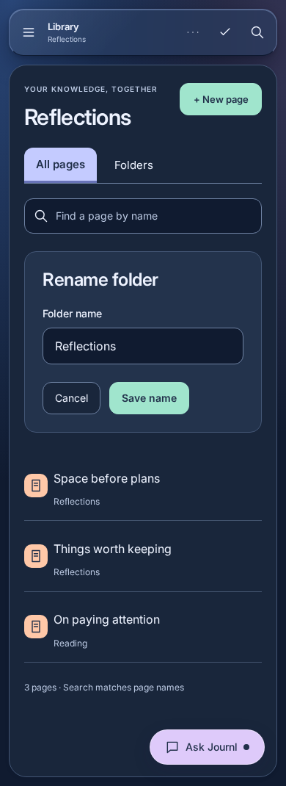
SHA256 de67aaf60702bf896995e96bf131d6f26b4c70e7bfc5be196dc987ed474346cd
Rename folder · pending
folder-rename-pendingActions and implementation pointers
+ New page · Journal · Explore · All pages · ⌄ · Reflections · › · Reading · Folders · Save name… · Cancel · Space before plans · Things worth keeping · On paying attention · Ask Journl · Today’s Journal · Close · Instant · Thinking
apps/web/src/app/(app)/@appSidebar/_components/app-sidebar-pages.tsxapps/web/src/app/(app)/folders/_components/folder-nested-pages-list.tsxapps/web/src/app/(app)/pages/_components/page-editor.tsx

SHA256 420c77713f2af860b4b842846b81251fa2f097d6129b52eff8ebfbe3fc0a62bf

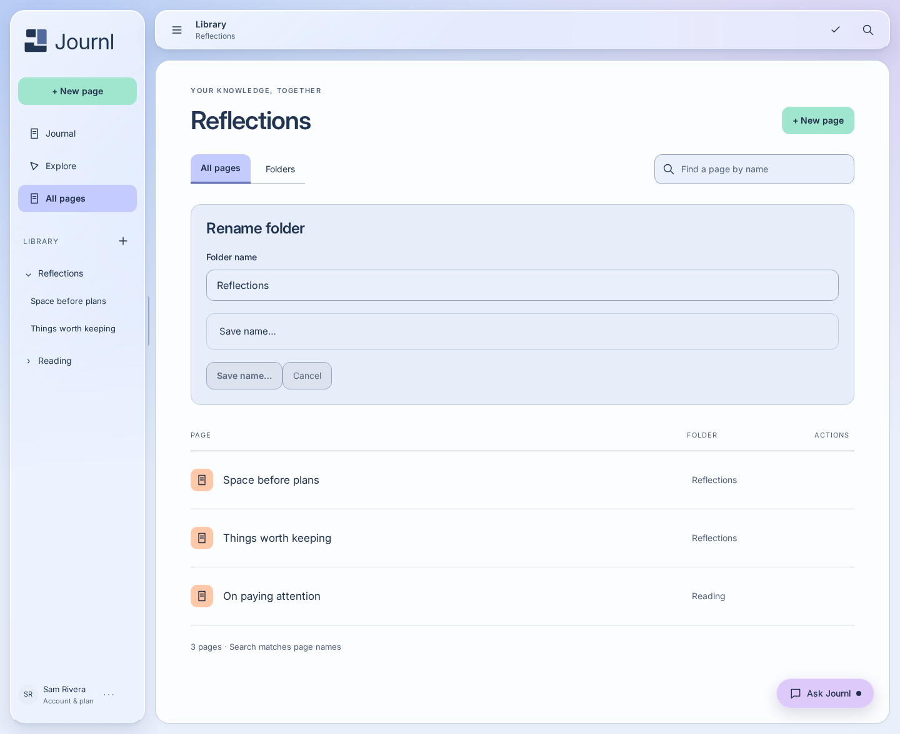
SHA256 df41464e9c860a94da18f16f833c74defb6fc03566c79861fa457413b0fbfc80

SHA256 809c45da659fec8da2d829b731507dd81b619c0de7d2a760cef9bf6c58f3c0e1

SHA256 adfb56332f1b9841796787c975f1c147859bce90ddf6fb5933c262fede2b700d
Rename folder · error
folder-rename-errorActions and implementation pointers
+ New page · Journal · Explore · All pages · ⌄ · Reflections · › · Reading · Folders · Cancel · Save name · Space before plans · Things worth keeping · On paying attention · Ask Journl · Today’s Journal · Close · Instant · Thinking
apps/web/src/app/(app)/@appSidebar/_components/app-sidebar-pages.tsxapps/web/src/app/(app)/folders/_components/folder-nested-pages-list.tsxapps/web/src/app/(app)/pages/_components/page-editor.tsx

SHA256 ee5ba38c06d53cda91f6f00beaeaad530c06494386d3b35840daa74694607bf7

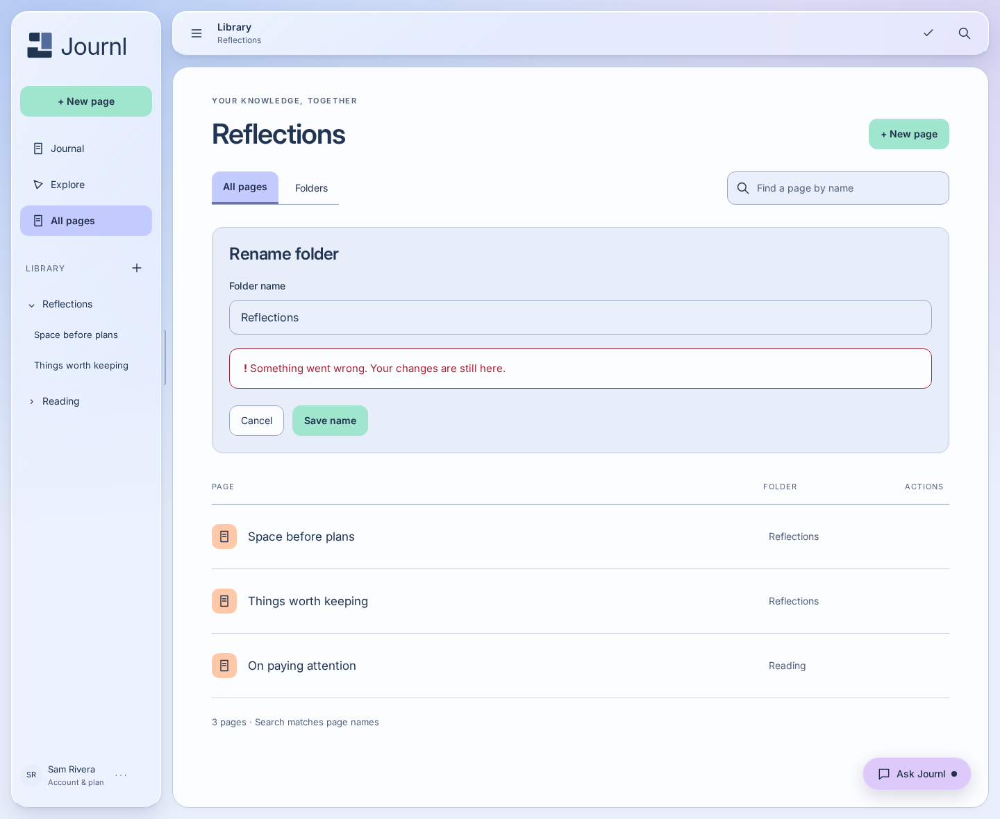
SHA256 a942c8dfcd10a5a7e10b2119d266dc31f2c175ebd7fed20a30fb161cdb1f51d5

SHA256 906ffd9c05c47f78d12687aa6887186872b7863da8e89609193f66bbe402af80

SHA256 9fde002d21831058b49adb4e14037a19cf52cd5f988cde898a0e9283198776de
Name required
folder-rename-invalidActions and implementation pointers
+ New page · Journal · Explore · All pages · ⌄ · Reflections · › · Reading · Folders · Save name · Space before plans · Things worth keeping · On paying attention · Ask Journl · Today’s Journal · Close · Instant · Thinking
apps/web/src/app/(app)/@appSidebar/_components/app-sidebar-pages.tsxapps/web/src/app/(app)/folders/_components/folder-nested-pages-list.tsxapps/web/src/app/(app)/pages/_components/page-editor.tsx

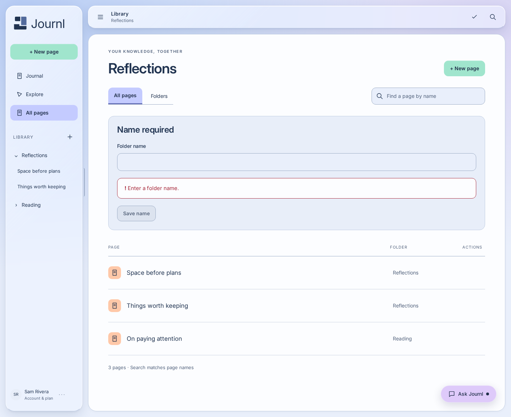
SHA256 945930db10619d6d1fe8520ba21832823eb28eb7fbd017349627dd4345a51180

SHA256 bf83d40457be60ceb9d59e803a6e5090f2c18b48f71e31c7f377196bb00b1309

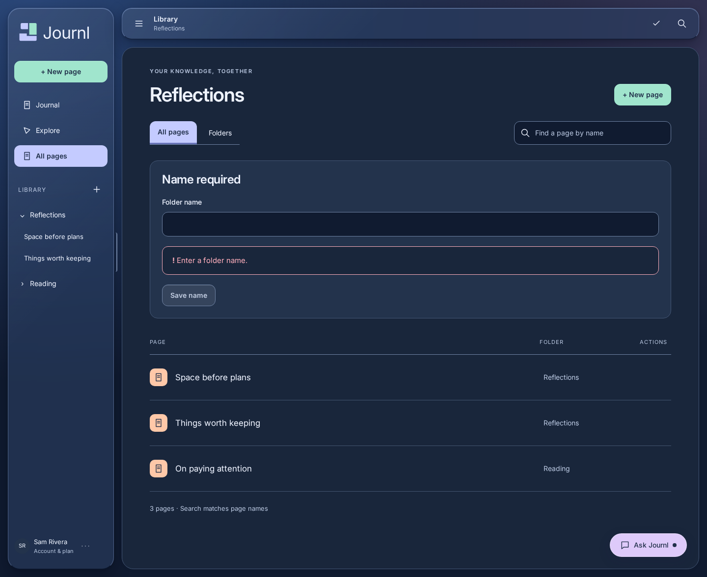
SHA256 294349bcb8e92403e50880e81e5758b418d3eb20e0a08ae90823f03ffad23b55

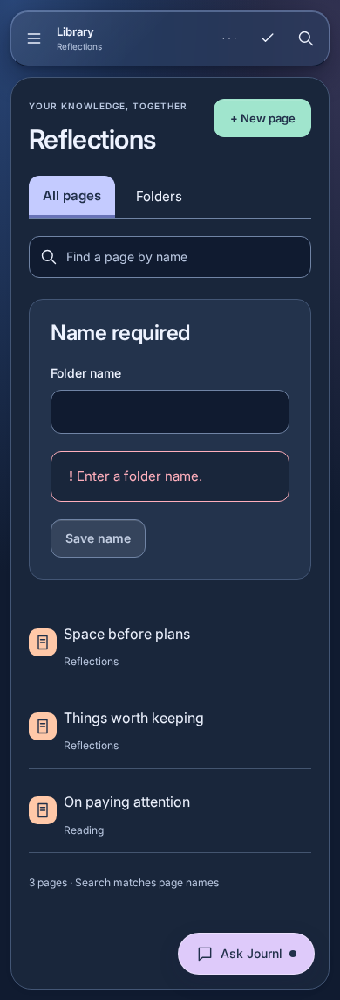
SHA256 b52141ca7fc4c9e55dd8a192ae44012452d87d022617cef71136d02a068eb5f6